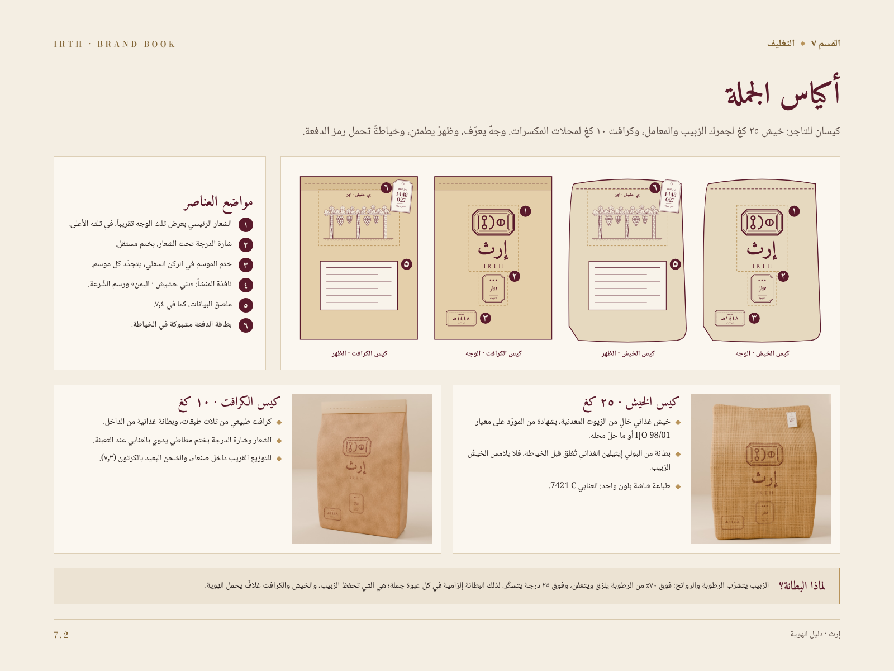
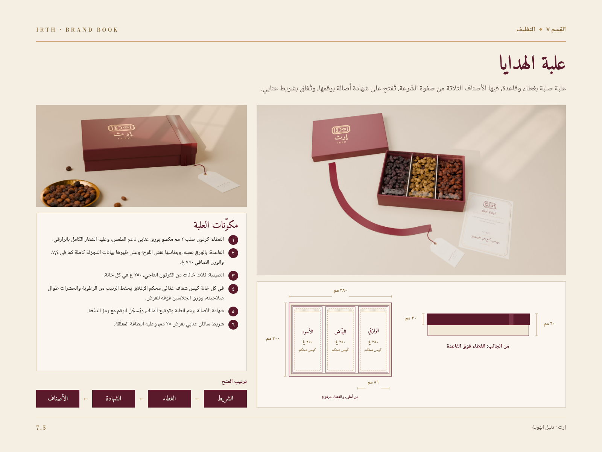

حزمة التطوير ١صفحات الدليل بعد التطويرIRTH · BRAND BOOK
صفحتا ٧٫٢ و٧٫٥ في دليلك بعد التطوير
الصور الواقعية في مواضع المحاكيات داخل صفحاتك نفسها، والمخططات الفنية والنصوص باقية كما هي.
٧٫٢ · أكياس الجملة

٧٫٥ · علبة الهدايا

٧٫٢
الخيش ٢٥ كغ والكرافت ١٠ كغ، وعلى كلٍّ منهما عناصر الوجه المرقّمة في المخطط: الشعار، والدرجة، والموسم.
٧٫٥
العلبة بمقاسها في المخطط، ٢٨٠ × ٢٠٠ مم وغطاؤها ٣٠ مم، مغلقةً ثم مفتوحةً على أصنافها الثلاثة وشهادة الأصالة.